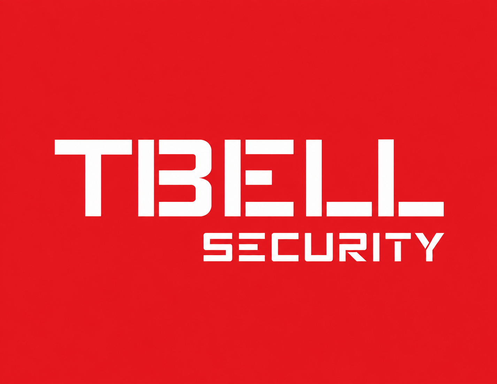

금융사의 모바일 서비스에서 고객 인증 과정 중 일부 개인정보가 외부 서버로 전송된 정황이 확인됐습니다. 관계 기관은 정확한 유출 규모와 사고 원인을 조사하고 있으며, 유사 구조를 사용하는 서비스에 대해서도 점검을 요청했습니다.
경영전략팀
AI Security 시장 투자 확대
글로벌 기업들의 AI 보안 관련 투자와 신규 제품 출시가 이어지면서 관련 시장 확대 가능성이 주목받고 있습니다.
가상테크리서치
관련 뉴스 보기 →
DAILY SECURITY · AI · TECHNOLOGY

안녕하세요. 보안사업팀 서창현 선임입니다.
오늘의 주요 보안·AI 이슈와 업무 관련 시사점을 전달드립니다. 감사합니다.
보안·AI 업계의 오늘을 분야별로 빠르게 훑어보세요.
10/9~10/12 사이버 위협 동향·글로벌 보안 업데이트·AI Security 세미나 예정
금융권 개인정보 유출과 제조업 랜섬웨어 피해로 외부 연동·백업망 관리 중요성 부각
생성형 AI 확산에 따라 AI 데이터 보호·접근제어·자동 대응 기술 경쟁 확대
웹 서버 RCE·클라우드 계정 탈취·랜섬웨어 등 주요 위협 지속
국내외 기업의 AI 보안 기능 강화와 보안 운영 자동화 사업 확대
AI Agent 권한 통제와 AI 기반 취약점 자동 탐지 기술 고도화
AI·클라우드 중심 IT 투자 재편에 따라 관련 보안 투자 수요도 변화
오늘 우리 부서에서 한 번쯤 확인해볼 만한 소식입니다.
글로벌 기업들의 AI 보안 관련 투자와 신규 제품 출시가 이어지면서 관련 시장 확대 가능성이 주목받고 있습니다.
외부 문서의 악성 지시문을 AI Agent가 실행하도록 유도하는 새로운 공격 사례가 보고됐습니다.
공격자가 원격 계정을 탈취한 뒤 내부망으로 이동하면서 동일 망의 백업 서버까지 암호화한 사례가 확인됐습니다.
AI Agent를 정보 수집과 공격 단계 자동화에 활용하는 가능성이 보안 업계의 새로운 이슈로 떠오르고 있습니다.
오늘 업무에 참고할 만한 이슈를 조금 더 자세히 살펴봅니다.
금융사의 모바일 서비스에서 고객 인증 과정 중 일부 개인정보가 외부 서버로 전송된 정황이 확인됐습니다. 관계 기관은 정확한 유출 규모와 사고 원인을 조사하고 있으며, 유사 구조를 사용하는 서비스에 대해서도 점검을 요청했습니다.
우리 고객사 역시 다양한 외부 서비스와 API를 사용하고 있을 가능성이 높습니다. 단순 취약점 점검뿐 아니라 어떤 정보가 어느 외부 서비스로 전달되는지 확인하는 관점도 보안 점검에 포함할 필요가 있습니다.
제조업체를 대상으로 한 랜섬웨어 공격에서 공격자가 원격 접속 계정을 탈취한 뒤 내부 시스템으로 이동한 정황이 확인됐습니다. 일부 기업에서는 운영 서버뿐 아니라 백업 서버까지 함께 암호화돼 복구에 어려움을 겪은 것으로 알려졌습니다.
백업 파일의 존재 자체보다 공격자가 백업 시스템에 접근할 수 있는가가 더 중요한 문제가 될 수 있습니다. 고객사 진단 및 제안 시 백업망 분리와 관리자 권한 관리까지 함께 확인할 필요가 있습니다.
널리 사용되는 웹 서버 제품에서 인증 없이 원격 명령을 실행할 수 있는 취약점이 공개됐으며, 실제 공격에서 해당 취약점이 악용되는 정황도 확인됐습니다.
취약점 공개와 실제 공격 사이의 시간이 짧아지고 있습니다. 해당 제품을 사용한다면 정기 패치 일정만 기다리기보다 사용 여부 확인 → 노출 여부 확인 → 우선 패치 순서로 빠르게 대응할 필요가 있습니다.
공격자가 클라우드 관리자 계정과 장기간 유지되는 API Key를 확보한 뒤 정상 사용자처럼 시스템에 접근하는 사례가 증가하고 있습니다.
클라우드 보안에서는 계정 자체뿐 아니라 API Key, Service Account 등 사람이 직접 로그인하지 않는 인증정보까지 함께 관리해야 합니다.
웹페이지나 이메일, 문서 안에 숨겨진 악성 명령을 AI Agent가 정상적인 지시로 인식하도록 유도하는 Prompt Injection 공격 사례가 보안 연구를 통해 공개됐습니다.
사내 AI Agent를 업무 시스템과 연결할 경우 외부 데이터를 무조건 신뢰하지 않도록 설계하고, Agent가 실행할 수 있는 기능과 접근 가능한 데이터의 범위를 최소화하는 기준이 필요합니다.
AI 모델을 활용해 대규모 소스코드를 분석하고 잠재적인 보안 취약점을 찾아내는 기술 연구 결과가 공개됐습니다.
AI 기반 보안 분석은 기존 도구를 완전히 대체하기보다 개발자와 보안 담당자가 우선 확인해야 할 영역을 빠르게 좁혀주는 보조 수단으로 활용 가능성이 있습니다.
PC와 책상 위에 보안 관련 주요 정보를 불필요하게 보관하지 말고, 계정 ID·비밀번호를 적은 포스트잇을 모니터나 책상에 붙여두지 마세요.
공식 기관 발표 또는 신뢰할 수 있는 전문 매체를 우선 확인합니다. 동일 사건이 여러 매체에서 보도된 경우 내용을 교차 확인하며, 발행 전 24시간 이내 소식 중 업무 관련도가 높은 내용을 우선 선정합니다.
공식 기관 · CERT · 보안 전문 언론 · 주요 IT/경제 언론
CERT · 보안기관 · Vendor Advisory · Security 전문매체 · AI 공식 블로그
분류가 맞지 않거나 추가로 다루길 원하는 주제가 있다면 회신으로 알려주시면 감사하겠습니다.